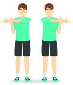
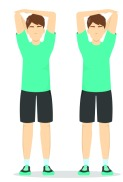
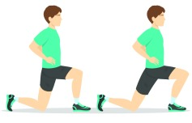
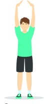
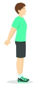
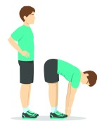
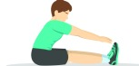
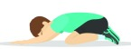

1. Shoulder stretch
2. Triceps stretch
3. Hip Flexop stretch
4. Overhead stretch
5. Chest stretch
6. Forward bend
7. Toes touch
8. Child's pose
9. Quadriceps stretch

light movement after exercise It causes the body to cool down slowly, called Cool Down. Many people have often heard that Warm Down, which is a misnomer. The correct summon is cooldown, which translates to cooling down.
The cooldown has an unexpected benefit. Gradually cooling the body through gentle physical activity. After exercise, such as walking, it helps your heart rate gradually increase. decrease slowly Blood flows to different parts. of the body more fully
which while we are exercising hard The muscles will draw oxygen to be used as energy in the movement. And produces lactic acid (Lactic Acid) which is a waste product from the energy extraction process. This acid, when there is a lot in the muscles, will result in fatigue. And if there is too much that the body can't handle, it can cause cramps. But lactic acid can be broken down when the muscles have enough oxygen to supply them.
Therefore, the cooldown will help the blood flow to different parts. of the body well It also causes lactic acid in the muscles. The cause of muscle aches gradually dissipates as the oxygen in the blood can flow to full nourishment. And reduce the chances of muscle soreness after exercise as well.